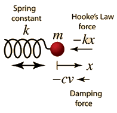

Driven Oscillator
If a damped oscillator is driven by an external force, the solution to the motion equation has two parts, a transient and a steady-state part, which must be used together to fit the physical boundary conditions of the problem.
|  | The motion equation is of the form and has a general solution |
In the underdamped case this solution takes the form

The initial behavior of a damped, driven oscillator can be quite complex. The parameters in the above solution depend upon the initial conditions and the nature of the driving force, but deriving the detailed form is an involved algebra problem. The form of the parameters is shown below.
Details of parameter evaluation
Examples of driven oscillators
| Transient solution | Steady-state solution | Expansion of above terms |
Periodic motion concepts
| HyperPhysics***** Mechanics | R Nave |